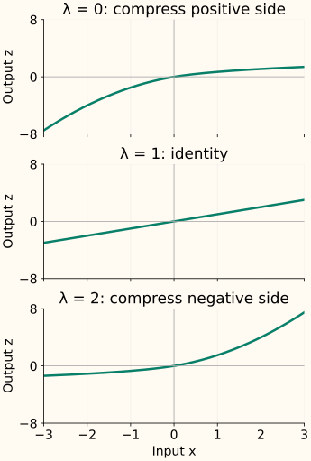

Yeo-Johnson Transform
A feature such as a change in inventory can be negative, zero, or positive. Box–Cox cannot accept that domain directly. Yeo–Johnson builds a power family around zero, keeping both signs while allowing the spacing to change.
Its defining idea is a pair of connected branches: one for nonnegative values and one for negative values. A single parameter controls both. Understanding those branches is more useful than memorizing the full piecewise formula.
Two branches meet at zero
Call the input $x$, the shape parameter $\lambda$, and the transformed output $z$. On the nonnegative side, shift the input by 1 and apply the Box–Cox expression. On the negative side, work with the magnitude, use parameter $2-\lambda$, then restore the minus sign.
For example, at $\lambda=0$, input 3 becomes $\log(4)\approx1.3863$, while input −3 becomes $-(4^2-1)/2=-7.5$. This is not a signed logarithm: compressing the positive side can expand the negative side.

Read each side of the formula separately
For a nonnegative input, the shifted base $1+x$ is at least 1. As in Box–Cox, the zero-parameter case is the logarithmic limit:
For a negative input, the positive base is $1-x$. Replacing the parameter by $2-\lambda$ makes its special case occur at $\lambda=2$:
At $\lambda=1$, the first expression simplifies to $x$ and the second does too. At zero, both branches meet with slope 1, so there is no jump or corner. You can use the map on all finite real inputs mathematically; very large values or extreme parameters can still overflow in floating-point computation.
Change λ and watch both sides respond
| Input x | Raw Yeo–Johnson output |
|---|---|
| −9 | −9.0000 |
| −3 | −3.0000 |
| −1 | −1.0000 |
| 0 | 0.0000 |
| 1 | 1.0000 |
| 3 | 3.0000 |
| 9 | 9.0000 |
Fit the shape on training data
Scikit-learn’s PowerTransformer(method="yeo-johnson") estimates one parameter per feature using maximum likelihood. The Box–Cox fitting explanation introduces that idea; Yeo–Johnson uses the same principle with its own change-of-scale correction.
The default also standardizes the transformed training columns. Consequently, the final standardized output need not preserve the original sign or map zero to zero. Those are properties of the raw family, before centering and scaling.
Here we disable standardization and fit on [−3, −1, 0, 1, 2, 4, 20]. The result is approximately $\lambda=0.4374$: the positive tail is compressed and the negative side expanded.
Run the fitted example and its inverse
import numpy as np
from sklearn.preprocessing import PowerTransformer
train = np.array([[-3.], [-1.], [0.], [1.], [2.], [4.], [20.]])
future = np.array([[-2.], [8.]])
transform = PowerTransformer(method="yeo-johnson", standardize=False)
z_train = transform.fit_transform(train)
z_future = transform.transform(future)
print(round(float(transform.lambdas_[0]), 4))
print(z_train.ravel().round(4).tolist())
print(z_future.ravel().round(4).tolist())
np.testing.assert_allclose(transform.inverse_transform(z_future), future)
0.4374
[-4.9438, -1.2504, 0.0, 0.8097, 1.4105, 2.336, 6.3728]
[-2.9221, 3.6912]Fit once on each training fold and reuse the parameter on its validation data. Use a pipeline to enforce that boundary. A method that accepts negative numbers still needs a missing-value policy; NaN is not another point on its real-valued curve.
What changes in the likelihood?
Let $n$ be the number of observed training values and $v_\lambda$ the variance of their transformed values, computed with divisor $n$. Define $\operatorname{sign}(x)$ as −1 for negative values, 0 at zero, and +1 for positive values. The parameter-dependent log-likelihood is
The second term corrects for the two branches’ changes of scale. Constants that do not depend on $\lambda$ are omitted. This criterion is documented in SciPy’s Yeo–Johnson likelihood reference.
What this family cannot solve
Yeo–Johnson preserves equalities: repeated zeros remain repeated zeros before standardization. It cannot turn a feature with a large point mass into an exactly continuous normal distribution. It also changes distances and linear relationships, so compare downstream validation performance rather than treating normal-looking marginals as the goal.
The constants 1 in the formula are part of the map. Changing a feature’s units changes where those constants sit relative to its values, so unit choices can affect the fitted shape. Keep the input representation consistent between training and prediction.
All-real inputs do not always mean all-real inverse inputs
The inverse accepts values in the raw map’s output range. When $\lambda<0$, the positive branch approaches the upper bound $-1/\lambda$. When $\lambda>2$, the negative branch approaches the lower bound $1/(2-\lambda)$. Those bounds are not reached by finite inputs.
At $\lambda=-1$, for example, raw outputs must be below 1. A target model could predict 1.2, which has no valid inverse. With $0\le\lambda\le2$, the raw family covers all real outputs. If standardization is enabled, undo it before applying these raw-output bounds; the fitted transformer’s inverse handles that order.
C++: make the shared branch explicit
One helper handles a nonnegative magnitude and a branch parameter. The negative side calls it with $2-\lambda$ and restores the sign. This implementation applies a known parameter; fitting it is a separate optimization problem.
Compile the fixed-parameter transform
#include <cmath>
#include <iomanip>
#include <iostream>
#include <stdexcept>
double power_branch(double magnitude, double p) {
const double u = std::log1p(magnitude);
return p == 0 ? u : std::expm1(p * u) / p;
}
double yeo_johnson(double x, double lambda) {
if (!std::isfinite(x) || !std::isfinite(lambda))
throw std::invalid_argument("finite input and parameter required");
const double z = x >= 0 ? power_branch(x, lambda)
: -power_branch(-x, 2 - lambda);
if (!std::isfinite(z)) throw std::overflow_error("transform overflow");
return z;
}
int main() {
std::cout << std::fixed << std::setprecision(4);
for (double lambda : {0., 1., 2.}) {
std::cout << "lambda=" << lambda << ":";
for (double x : {-3., 0., 3.})
std::cout << " " << yeo_johnson(x, lambda);
std::cout << "\n";
}
}
lambda=0.0000: -7.5000 0.0000 1.3863
lambda=1.0000: -3.0000 0.0000 3.0000
lambda=2.0000: -1.3863 0.0000 7.5000References and further reading
- SciPy: yeojohnson — the two branches, special cases and original Yeo–Johnson paper.
- SciPy: yeojohnson_llf — the parameter-fitting criterion.
- Scikit-learn: PowerTransformer — featurewise fitting, default standardization, missing values and inversion.